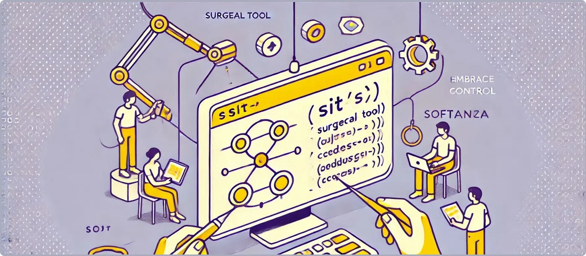

Mastering Precision with the Sit() Function
The Sit() function stands out as a surgical tool for precision string manipulation. Whether you’re designing advanced text editors, processing linguistic data, or debugging complex parsers, Sit() adapts to your needs with unparalleled flexibility. Embrace the control it offers and elevate your string manipulation game with Softanza!
by Mansour Ayouni · in the repository since 2024-12-07 · tutorial · area String

Let’s explore practical examples where Sit() excels.
Example 1: Extract Variable Contexts for Text Highlighting
Imagine building a text editor with a live preview that highlights words with their surrounding context. The goal is to extract a substring like "nice" and dynamically include 2 characters before and 3 characters after:
load "stzlib.ring"
o1 = new stzString("what a <<nice>>> day!")
? o1.Sit(
:OnSection = o1.FindAsSection("nice"),
:AndHarvest = [ :NCharsBefore = 2, :NCharsAfter = 3 ]
)
#--> [ "<<", ">>>" ]run on 2026-10-08 20:45 at commit 4a184e6f0: kept its promise
Here’s why Sit() is invaluable:
- The number of surrounding characters is not tied to a fixed pattern but is defined based on contextual needs—ideal for previews or summaries.
- Alternative methods like SubStringBounds() are rigid, extracting only exact bounds.
Example 2: Position-Based Extraction for Advanced Tokenization
Suppose you’re tokenizing a sentence and want to dynamically extract letters surrounding a given character (like "i" in "nice") to analyze its immediate context, for tasks such as natural language processing (NLP) or spell checking.
o1 = new stzString("what a <<nice>>> day!")
? o1.Sit(
:OnPosition = 11, # the letter "i"
:AndHarvest = [ :NCharsBefore = 1, :NCharsAfter = 2 ]
)
#--> [ "n", "ce" ]run on 2026-10-08 20:45 at commit 4a184e6f0: kept its promise
This showcases Sit()’s precision:
- Anchors the operation to a specific position.
- Dynamically harvests a customizable range around the anchor.
Example 3: Extracting Overlapping Contexts for Deep Inspection
For debugging, you might need to inspect overlapping contexts around a substring (like "nice") and capture the boundaries of its surroundings. Instead of a static range, you define exactly how far before and after to look.
o1 = new stzString("what a <<nice>>> day!")
? @@( o1.Sit(
:OnSection = o1.FindAsSection("nice"),
:AndHarvestSections = [ :NCharsBefore = 2, :NCharsAfter = 3 ]
) )
#--> [ [8, 9], [14, 16] ]run on 2026-10-08 20:45 at commit 4a184e6f0: kept its promise
Here, Sit() extracts surrounding section boundaries with custom offsets:
- Surrounding ranges ([8, 9] and [14, 16]) dynamically depend on your NCharsBefore and NCharsAfter parameters.
- This level of granularity is crucial for debugging parsers or extracting overlapping segments in structured text.
NOTE:
@@(val)used above, is a Softanza small function, akin to a pair of glasses that enhance vision, designed to produce a readable string representation of any valueval, especially whenvalis a list.
Conclusion
The Sit() function’s strength lies in:
1. Manual control over context size: Specify how many characters before and after to include—perfect for dynamic, context-sensitive tasks.
2. Support for flexible anchors: Work with positions, sections, or dynamically found substrings.
3. Versatile harvesting: Extract content, section bounds, or both.
Cite
Mansour Ayouni. "Mastering Precision with the `Sit()` Function". Softanza narrations, 2024. https://mayouni.github.io/stzsite/en/narrations/stzstring-sit-narration.html
Run in Haro's name on 2026-10-08 20:45 inside the library at commit 4a184e6f0, block after block in one process: 3 of 3 blocks kept their promise; the others are illustrations. The code of the articles is Haro code. Where an article was written before the language took its present name, the name was changed and nothing else. Genre, area and series read from the file's name, the year from its first commit: derived, until the article carries its own header. The file on GitHub(opens in a new tab)